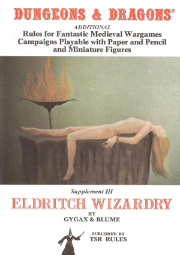

Les pouvoirs psychiques dans le JDR
Vocabulaire#
Alors que l'on dit plutôt en français, "pouvoirs psychiques", le terme américain "psionic" est entré progressivement dans le vocabulaire des jeux de rôles, souvent en étant francisé en "psionique". Dans cet article, nous nous limiterons à l'usage du terme "psychique" en français, le terme "psionic" étant réservé à la citation d'ouvrages en anglais.
1976 - OD&D au début de tout (comme souvent)#
Introduction#

En 1976 sort le livre VI de Dungeons & Dragons avec le titre Eldritch Wizardry cosigné de Gary Gygax et de Brain Blume. Ce livre d'une soixantaine de pages contient essentiellement des suppléments sur les pouvoirs psychiques, sur le druide en tant que classe de personnage et sur les démons.
Ledit supplément est disponible sur archive.org. Il n'a pas été traduit en français à ma connaissance alors que les règles de OD&D l'ont été : voir sur le très bon site La Forge de papier.
Il semble que ce soit la première apparition des pouvoirs psychiques dans le monde du JDR. Leur apparition au sein de D&D a quelque chose d'étrange, car on pourrait y voir une collision de diverses influences dans la fantasy: le médiéval-fantastique qui favorise la magie et les pouvoirs psychiques qui sent plus le JDR contemporain ou futuriste.
D&D propose les pouvoirs psy comme un genre de supplément optionnel pour "pimenter" les parties. L'introduction de 1976 de Tim Kask dudit livre est amusante :
L'introduction du combat psionique s'attache à redynamiser des jeux devenus ternes. Cela ouvre des possibilités inédites à la fois pour les joueurs et le MD et, ce faisant, cela permet de se reconnecter à l'un des thèmes favoris des écrivains de science-fiction et de fantasy : les pouvoirs inconnus de l'esprit.
Pour autant, en lisant entre les lignes, l'introduction des démons dans le jeu semble pousser Gygax à créer les règles des pouvoirs psychiques, mieux adaptés, selon lui, à représenter les pouvoirs de certains démons.
Comme souvent dans OD&D, les règles sont confuses, incomplètes, éclatées dans le tout le livret, entrecoupées de choses qui n'ont rien à voir (le Druide, un système de combat alternatif basé sur la Dextérité Ajustée, etc.). Au niveau édition, Eldritch Wizardry est un des pires exemples de l'époque.
Obtention des Pouvoirs Psychiques (PoP)#
A la création du PJ, un score de 15 ou plus dans INTelligence, WISdom ou CHArisma donne la possibilité de tester si le personnage dispose d'un pouvoir psy (si le personnage est humain). Il est nécessaire de faire 91 ou plus sur 1d100 pour que ce soit le cas. Les moines et les druides ne peuvent pas avoir de pouvoirs psychiques.
Si le personnage est éligible, il faut faire un nouveau jet de 1d100 pour déterminer le potentiel psychique (PP, purement aléatoire). Suivant le PP, le PJ obtient un malus ou un bonus pour avoir des pouvoirs psychiques (PoP, de -6% à +3%).
| PP (1d100) | Bonus/Malus au jet d'obtention de PoP (BMPoP) |
|---|---|
| 01–10 | -6% par niveau (cumulatif) |
| 11–25 | -5% par niveau (cumulatif) |
| 26–50 | -4% par niveau (cumulatif) |
| 51–75 | Aucun |
| 76–90 | +1% par niveau (cumulatif) |
| 91–99 | +2% par niveau (cumulatif) |
| 00 | +3% par niveau (cumulatif) |
La chance de base pour avoir un PoP est de 10% + BMPoP par niveau. Ainsi, un perso du 4ème niveau avec un PP de 90 aura une base de 10 + 1 = 11 soit 11 x 4 = 44% de chances d'avoir un PoP. Cela veut dire aussi qu'un personnage de niveau 10 aura 100% d'avoir un PoP.
Notons enfin que donc, ce jet se produit à chaque changement de niveau.
Cerise sur le gâteau : si le PJ obtient un PoP, alors s'il réussit un jet de 1d100 sous son PP, il en a automatiquement un second !
Nous sommes en plein dans le monde Gygaxien des règles gigognes :
- R1 : INT ou WIS ou CHA > 15,
- R2 : Si R1 OK, jet de 1d100 pour PP et BMPoP,
- R3 : Quand R2 OK, jet de BMPoP pour obtenir un PoP,
- R4 : Si R3 OK, si succès, alors jet de PP pour obtenir un second PoP.
Nous verrons apparaître ce genre de règles gigognes dans les autres éditions de D&D signées de Gygax.
Pouvoirs psychiques (PoP)#
Liste des pouvoirs#
La liste originale est présentée ci-dessous.

La liste des PoP est fournie ci-dessous, retriée par type (interprétation personnelle) et par classe de personnages.
| Pouvoir Psychique (PoP) | Type | Guerriers & Voleurs | Magiciens | Clercs |
|---|---|---|---|---|
| Réduction | A | 1 Oui (B) | 1 Oui (B) | |
| Expansion | A | 2 Oui (B) | 2 Oui (B) | |
| Lévitation | A | 3 Oui (B) | 3 Oui (B) | 1 Oui (B) |
| Changer le poids du corps | A | 4 Oui (B) | 2 Oui (B) | |
| Corps comme arme | A | 5 Oui (B) | ||
| Réarrangement moléculaire | A | 6 Oui (S) | 3 Oui (S) | |
| Manipulation moléculaire | A | 7 Oui (S) | ||
| Contrôle du corps | A | 8 Oui (S) | ||
| Barrière mentale | A | 9 Oui (S) | ||
| Agitation moléculaire | A | 4 Oui (B) | ||
| Altération de la forme | A | 5 Oui (S) | ||
| Contrôle cellulaire | A | 4 Oui (B) | ||
| Contrôle de l'esprit sur le corps | A | 10 Oui (B) | 5 Oui (B) | |
| Invisibilité | A | 11 Oui (B) | ||
| Hibernation | A | 12 Oui (B) | ||
| Télékinésie | A | 13 Oui (S) | 6 Oui (S) | |
| Contrôle de l'énergie | A | 14 Oui (S) | ||
| Domination | B | 15 Oui (B) | 6 Oui (B) | |
| Hypnose | B | 7 Oui (B) | 7 Oui (B) | |
| Projection télépathique | B | 8 Oui (S) | 8 Oui (S) | |
| Altération de l'aura | B | 9 Oui (S) | ||
| Domination des masses | B | 10 Oui (S) | ||
| ESP | B | 9 Oui (B) | 11 Oui (B) | |
| Empathie | B | 12 Oui (S) | ||
| Télépathie animale | B | 13 Oui (B) | ||
| Prémonition | C | 16 Oui (B) | 10 Oui (S) | 14 Oui (S) |
| Clairaudience | C | 17 Oui (B) | 11 Oui (B) | |
| Clairvoyance | C | 18 Oui (B) | 12 Oui (B) | |
| Détection du mal/du bien | C | 13 Oui (B) | 15 Oui (B) | |
| Détection de la magie | C | 14 Oui (B) | ||
| Marche dimensionnelle | D | 19 Oui (S) | 16 Oui (S) | |
| Projection astrale | D | 20 Oui (S) | 15 Oui (S) | 17 Oui (S) |
| Porte dimensionnelle | D | 16 Oui (S) | ||
| Téléportation | D | 17 Oui (S) | ||
| Substance éthérée | D | 18 Oui (S) | ||
| Voyage probabiliste | D | 18 Oui (S) |
Nous pouvons classer ces pouvoirs en plusieurs catégories (ce n'est pas dans le livre original) :
- A : Contrôle de la matière au niveau moléculaire, voire atomique,
- B : Contrôle via l'esprit de l'esprit,
- C : Sens,
- D : Voyage psychique.
Les pouvoirs sont présents chez les types de personnages soient au niveau Basique (B) soit au niveau Supérieur (S). Le fait qu'un PoP soit Supérieur ne se traduit (dans les règles) que par le fait qu'elle soit détectable par un autre personnage ayant des pouvoirs psy au double de la portée du pouvoir (voir plus bas détection des pouvoirs psychiques).
Les PJ ne peuvent pas avoir plus de PoP Supérieurs que de PoP Basiques.
Cette distinction est peu développée et on imagine que le but était d'avoir la possibilité de deux puissances différentes dans les mêmes pouvoirs. Par contre, les pouvoirs eux-mêmes n'utilisent pas cette distinction.
La détermination des PoPs est aléatoire mais il est suggéré de restreindre le choix à des types de PoP cohérents.
A - Contrôle de la matière et de l'énergie#
On retrouve dans cette dimension pas mal de pouvoirs :
- Réduction ;
- Expansion ;
- Lévitation, qui est un moyen de changer le poids du corps ;
- Changer le poids du corps (Body Equilibrium), notamment pour marcher sur l'eau ;
- Corps comme arme (Body Weaponry) ;
- Réarrangement moléculaire, qui transforme les métaux ;
- Manipulation moléculaire, qui permet de rendre fragile différentes matières dures ;
- Contrôle du corps, qui permet d'adapter le corps à des conditions extrêmes comme le froid extrême, le feu, les fumées empoisonnées, etc. ;
- Barrière mentale ;
- Agitation moléculaire, agit un peu comme un four à micro-ondes ;
- Altération de la forme, pour se changer en quelqu'un d'autre ;
- Contrôle de l'esprit sur le corps, pour se passer de manger, de boire et de dormir ;
- Invisibilité ;
- Hibernation (Suspend Animation), ou comment suspendre ses fonctions vitales ;
- Télékinésie, contrôle du mouvement des objets par la pensée ;
- Contrôle de l'énergie, ou comment dissiper des énergies agressives ;
- Contrôle cellulaire (Cellular Adjustment), qui permet de soigner les blessures et les maladies.
B - Contrôle via l'esprit de l'esprit#
On retrouve les pouvoirs suivants :
- Domination, pour forcer une personne à faire ce que le PJ souhaite ;
- Hypnose, contrôle des esprits faibles ;
- Projection télépathique, envoyer des messages ou influence une personne ;
- Altération de l'aura ;
- Domination des masses ;
- ESP ;
- Empathie ;
- Télépathie animale.
C - Sens#
On retrouve les pouvoirs suivants :
- Prémonition ;
- Clairaudience ;
- Clairvoyance ;
- Détection du mal/du bien ;
- Détection de la magie.
D - Voyage psychique#
- Marche dimensionnelle ;
- Projection astrale ;
- Porte dimensionnelle
- Téléportation
- Substance éthérée ;
- Voyage probabiliste, une projection astrale avec le corps permettant de passer à travers les plans et les mondes parallèles (comme dans la Saga des Princes d'Ambres de Zelazni).
Modes d'Attaque et Modes de Défense#
Une fois que le PJ a son premier PoP, il gagne son premier Mode d'Attaque psychique (MA) : Explosion psionique (voir tableau ci-dessous).
Les autres MA sont gagnés tous les 4 PoP (5 pour les Guerriers).
Cette dernière consigne est un peu vague. Elle sous-entend que, lors du passage de niveau, le PJ ayant des pouvoirs psychiques va refaire un test pour avoir un nouveau PoP (sachant qu'il peut en obtenir au maximum deux par niveau). Il gagnera un mode d'attaque alors en fonction du nombre de PoP dont il dispose.
Concernant les Modes de Défense (MD), encore une fois les règles ne sont pas claires. Il est dit qu'ils sont acquis à raison de un tous les 3 PoP acquis (4 pour les Guerriers).
Comme les PJs ayant des pouvoirs psychiques sont capables de combattre psychiquement, il faut supposer que les MDs marchent comme pour les MAs et que le PJ gagne son premier MD avec son premier PoP, puis ensuite tous les 3 (ou 4) PoP acquis.
Une autre interprétation possible serait qu'il faut vraiment avoir 3 ou 4 PoP pour gagner son premier MD. Je trouve cette interprétation un peu bizarre au regard de la suite qui présuppose, dans le combat psionique, que l'attaquant psy a un MA et que le défenseur a un MD. Un défenseur ayant des pouvoirs psychiques sans MD ouvre une brèche dans le système.
Il n'est pas expliqué comment les MA/MD sont attribués : aléatoirement (D6 en rejouant le 6) ou séquentiellement, en utilisant les lettres, ou par simple choix. Comme la puissance de ces attaques est diverse et non linéaire, je pense pas que les lettres soient très importantes pour les MA. Pour les MD, il y a une certaine progression. Au DM de choisir son mode d'attribution.
La liste des modes d'attaque et de défense est présentée ci-dessous avec leur coût en Force Psionique entre parenthèses.
| Modes d'Attaque (MA), toutes classes | Modes de Défense (MD), toutes classes |
|---|---|
| A. Explosion psionique (20)[x3] | F. Esprit vide (1) |
| B. Poussée de l'esprit (10)[x1] | G. Bouclier de pensée (2) |
| C. Coup de fouet sur l'ego (15)[x3] | H. Barrières mentales (4) |
| D. Imposition d'identité (10)[x1] | I. Forteresse intellectuelle (7) |
| E. Écrasement psychique (25♠)[x3] | J. Tour de volonté de fer (10) |
♠ Si le PJ possède moins de 25 points de FP, il est demandé au MJ de "modifier la probabilité de succès de manière ad hoc".
L'utilisation des MAs peut être détectée par un PJ ou PNJ ayant des pouvoirs psychiques. Le facteur entre crochets donne le multiplicateur de portée du MA dans lequel le PJ ou PNJ peut détecter son usage. Pour mémoire, les pouvoirs
Force Psionique (FP), Force Psionique d'Attaque (FPA) et de Défense (FPD)#
Les formules sont les suivantes :
- FPA = PP + 2 x nombre(PoP) + 5 x nombre(MA) + 5 x nombre(MD)
- FPD = FPA
- FP = FPA + FPD = 2 x FPA
Ces scores serviront de réservoirs de points pour les attaques et les défenses psychiques en combat psychique, mais aussi pour les divers PoP que les PJs auront accumulés et dont le coût est expliqué dans les descriptions.
A chaque fois que de la FP est consommée, il faut répartir la consommation à 50%-50% entre la FPA et la FPD, cela pour toutes les consommations. En gros, la FP est un réservoir de points divisés en deux avec une consommation égale dans les deux sous-réservoirs (cela vaut aussi pour la consommation des points en combat, soit avec les MA et MD).
La FP se récupère assez vite en cessant toute activité psychique et en suivant les indications de la table suivante.
| Activité | Gain en FP |
|---|---|
| Marcher, parler et autres activités | 6 points par heure |
| Se reposer tranquillement | 12 points par heure |
| Dormir | 24 points par heure |
Détection des PoP et des MA#
La table ci-dessous présente les règles de détection des PoP et MA (nous avons utilisé les lettres pour désigner les MA) de PJs ou PNJs ayant des pouvoirs psychiques et détectant dans leur voisinage des créatures utilisant des pouvoirs.
| Type | Niveau/Nom | Portée de la détection | % de base | Cumulatif par tour |
|---|---|---|---|---|
| PoP | Basique | Portée du pouvoir | 10% | Oui (+10%) |
| PoP | Supérieur | 2 x Portée du pouvoir | 10% | Oui (+10%) |
| MA | A, C, E | 3 x Portée du pouvoir | 10% | Oui (+10%) |
| MA | B, D | Portée du pouvoir | 10% | Oui (+10%) |
| Objet psy | - | Portée du pouvoir | 10% | Oui (+10%) |
| Sort (idem psy) | - | Portée du sort | 10% | Oui (+10%) |
| Objet magique (idem psy) | - | Portée du sort | 10% | Oui (+10%) |
Si le pouvoir est utilisé en continu, alors les chances de détection dans le cadre de la portée de détection grandissent de 10% par tour.
La créature qui détecte ne pourra pas détecter un pouvoir qu'elle n'a pas, mais pourra, au premier tour détecter dans quelle direction le pouvoir est utilisé, et au second tour avec quelle puissance "relative" ce pouvoir est utilisé.
Les sorts qui sont similaires aux pouvoirs psychiques seront détectés de la même façon que lesdits pouvoirs. Les objets magiques qui ont les mêmes fonctions que les objets psychiques seront, eux-aussi, détectés de la même façon.
Le PJ psionique selon OD&D#
Le PJ psionique a donc les caractéristiques suivantes :
- PP avec BMPoP,
- Liste des PoPs,
- FP = FPA + FPD,
- Listes des MAs et MDs.
Combat psychique#
En cours